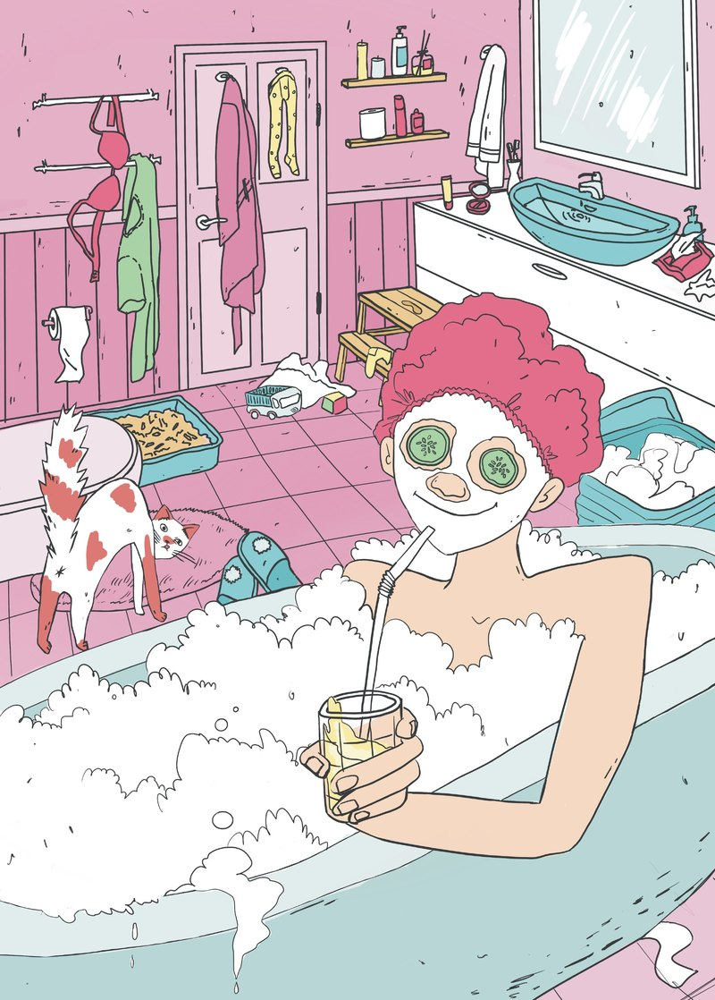

1, 2 или 3


Эта карта про отдых. Пора перестать ждать подходящего момента: незаконченные дела будут всегда, и до конца их не доделать. Поставьте на паузу работу и всё, что не даёт вам покоя, и дайте время себе.
Какой час сегодня вы отдадите себе?

Эта карта про обращение к глубинным знаниям, когда сами мы не можем найти выход. Ответ, который вы ищете, кто-то уже нашёл. Бывает, мы из гордыни разбираемся сами и не видим, что за спиной стоит тень с ножом. Помощь со стороны сейчас очень нужна.
К кому вы обратитесь за помощью сегодня?

Эта карта про предание. Битва закончилась, и мы лежим на поле боя сломанные. Сейчас Бог и высшие силы исцеляют нас, и нужно только расслабиться и позволить им это сделать. Довериться своей интуиции и принять то, что жизнь дарит, как подарок.
Что вы можете отпустить сегодня?